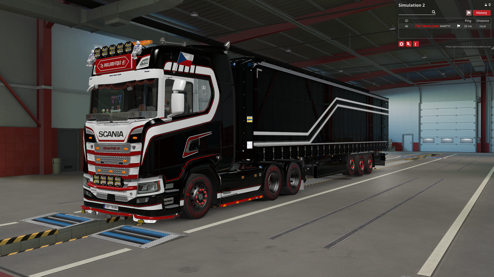

Scania
Hlavní kamion firmy
Naše flotila používá především Scanii. Kamiony ladíme do firemního stylu a dbáme na reprezentativní vzhled při konvojích i běžných jízdách.
- 🚛 Scania jako hlavní značka
- 🎨 Jednotný firemní styl
- 🌍 Vhodné pro dálkové trasy po Evropě
- 🤝 Reprezentace firmy v komunitě ETS2